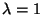
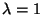

{kind=link}
{kind=link}
{kind=link}
- In the "pion wind" problem I found that for large cross sections
or large initial densities, the final momentum spectra has a strong dependence
on the
 subdivision. Using constant 40 mb cross sections, the
inverse slope of the transverse momentum spectra of nucleons is 20%
smaller in the  case than the "real" value that we would get
from the exact solution of the Boltzmann equation, in the Lorentz invariant
limit. By increasing the subdivision to , we get a good
approximation.
subdivision. Using constant 40 mb cross sections, the
inverse slope of the transverse momentum spectra of nucleons is 20%
smaller in the  case than the "real" value that we would get
from the exact solution of the Boltzmann equation, in the Lorentz invariant
limit. By increasing the subdivision to , we get a good
approximation.
- Secondary interaction simulation of the resonance gas generated by the
MICOR hadronization model.
The coalescence model completed with the secondary hadronic
interactions was also able to describe the pion and proton spectra.
Another result is that in the resonance gas created by quark coalescence,
collisions are rare enough and most cross sections are small enough for
the Lorentz invariance violation of the cascade algorithm to be negligible.
Thus subdivision is not necessary in this problem.
- Study of parton energy loss in RHIC Au+Au collisions, at
energy.
2
 2 scattering and
2 2 + final state radiation processes of quarks and
gluons have been taken into account. As a consequence of these processes,
the particle momentum distributions change, the high momentum component is
decreased (''quenching''). The transverse energy is decreased with an amount
depending on the cross sections.
Two different hadronization mechanisms have been compared that lead to different
final state hadron distributions.
The Lund string fragmentation model needed larger parton cross sections to
reproduce the experimental pion spectra than the independent fragmentation
model [7].
2 scattering and
2 2 + final state radiation processes of quarks and
gluons have been taken into account. As a consequence of these processes,
the particle momentum distributions change, the high momentum component is
decreased (''quenching''). The transverse energy is decreased with an amount
depending on the cross sections.
Two different hadronization mechanisms have been compared that lead to different
final state hadron distributions.
The Lund string fragmentation model needed larger parton cross sections to
reproduce the experimental pion spectra than the independent fragmentation
model [7].
I performed these studies as a member of the RHIC Transport Theory Collaboration (RTTC). Our aim is to develop transport models describing high energy heavy ion collisions, using our universal code.
Bibliography
-
- 1
- P. Csizmadia, T. Csörgõ, B. Lukács: New analytic
solutions of the non-relativistic hydrodynamical equations, Phys. Lett.
B443 (1998) 21-25
- 2
- P.
Csizmadia, P. Lévai, S. E. Vance, T. S. Biró, M. Gyulassy, J.
Zimányi: Strange hyperon and antihyperon production from quark and
string-rope matter, J. Phys. G25 (1999) 321-330
- 3
- P. Csizmadia, P. Lévai: , and production from deconfined matter in relativistic
heavy ion collisions at CERN SPS, Phys. Rev. C61 (2000) 031903
- 4
- P. Lévai, T. S.
Biró, P. Csizmadia, T. Csörgõ, J. Zimányi: The
production of charm mesons from quark matter at CERN SPS and RHIC, J. Phys.
G27 (2001) 703-706
- 5
-
P. Csizmadia and P. Lévai, The MICOR hadronization model with final
state interactions, J. Phys. G28 (2002) 1997-2000
- 6
- S.
Cheng, S. Pratt, P. Csizmadia, Y. Nara, D. Molnár, M. Gyulassy, S. E.
Vance, B. Zhang: The effect of finite-range interactions in classical
transport theory, Phys. Rev. C65 (2002) 024901
- 7
- Y. Nara, S. E. Vance, P. Csizmadia, A study of parton energy loss in Au+Au collisions at RHIC using transport theory, Phys. Lett. B531 (2002) 209-215